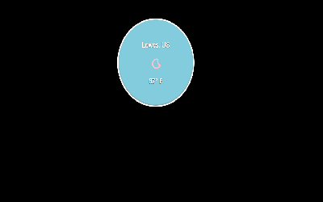

BashirHarrell
Front-end Developer
About
Hi, I'm Bashir linguist and aspiring programmer currently living in Beijing, China discovering the world of front-end development with the intention on finding full-time work as a developer. I also work as creative director and digital artist for Comatose Podcast. I have a strong interest in UX and UI and using data to bring to solve problems and make a differences, both large and small.
Portfolio

Local Weather App made using the OpenWeather and Darksky API


Contact
If you would like to get in touch with me to talk about anything related to my expeience in linguistcs, what its like to live and work in Japan and China, or how my progress is going in programming, feel free to get in touch with me on social media.